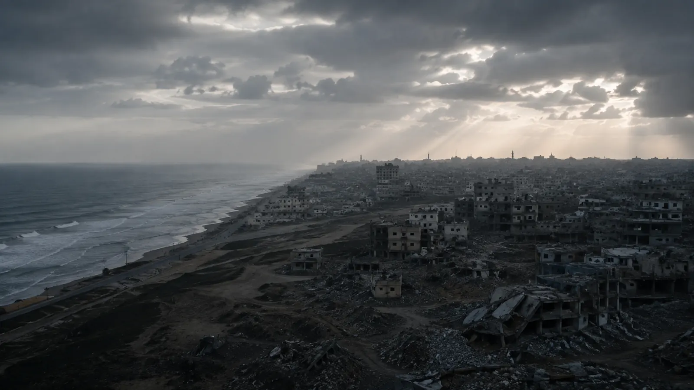

تحديثات على الهواء
-
15:04
عاجل
مراسل شهاب: إطلاق نار من طائرة مسيّرة «كواد كابتر» في منطقة السطر الغربي بخانيونس
لا معلومات عن إصابات حتى الآن، وطواقم الإسعاف تحاول الوصول إلى المكان وسط انقطاع الاتصالات.
-
14:48
مداخلة
مراسلنا من شرق خانيونس: تحرّكات آليات قرب «الخط الأصفر» منذ الصباح
شهود يتحدثون عن تجريف على أطراف المنطقة الشرقية، والأهالي يبتعدون عن الشارع الرئيسي.
-
14:21
غزة
حركة العائدين على شارع الرشيد مستمرة، والطريق الساحلي مفتوح بالاتجاهين
-
13:55
القدس
قنابل غاز خلال اقتحام محيط مخيم قلنديا، وإغلاق الحاجز أمام المركبات
-
13:30
إنساني
مستشفى ناصر: عاشر يوم على إغلاق معبر رفح، والمرضى ينتظرون التحويلات
إدارة المستشفى تحذر من نفاد أدوية الأورام خلال أيام، وتطالب بفتح المعبر أمام الحالات الحرجة.
-
13:02
البث
بدأ البث المباشر من كاميرا شهاب الثابتة فوق الأفق الغربي لمدينة غزة
من أرشيف البث
مكتبة الفيديو إعادة3:12:40
التغطية الكاملة ليوم الخرق في جباليا البلد
أمس84 ألف مشاهدة
إعادة3:12:40
التغطية الكاملة ليوم الخرق في جباليا البلد
أمس84 ألف مشاهدة

إعادة1:48:15 ميناء غزة على الهواء.. الصيادون بين القيود والبحر قبل يومين31 ألف مشاهدةإعادة2:05:52
العودة عبر الرشيد.. بث متواصل من الطريق الساحلي
هذا الأسبوع120 ألف مشاهدة
إعادة0:58:30
مؤتمر صحفي: مستشفى ناصر بعد إغلاق معبر رفح
هذا الأسبوع19 ألف مشاهدة